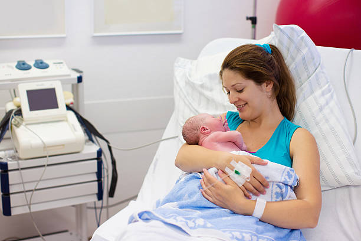
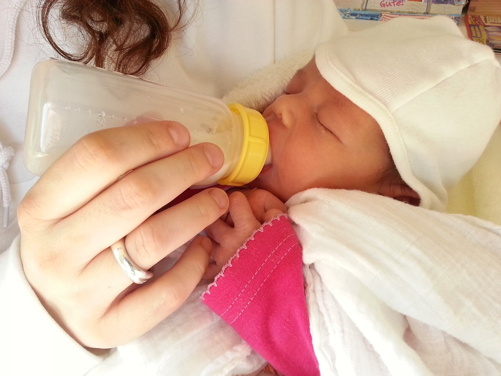

Hospital Support
- I can have multiple roles depending on neeed:
- * Pre-birth support
- * Travelling to hospital
- * Birthing partner
- * Support while in hospital
- * Home support for 6 weeks

Postnatal Mother Support
- I can support and offer advice on:
- * issues after vaginal or caesarean births.
- * postnatal depression.
- * bleeding
- * lifting, moving and exercise.
- * diet and rest
Breast Feeding Support
- Support with:
- * feedsuckling/sucking.
- * correct positioning and attachment of baby onto the breast.
- * getting milk supply set up correctly and building up the supply.
- * feeding patterns and how to tell a good feed.

Bottle Feeding
- Support with:
- * supplementing feeds, including reasons to supplement and how to effectively do this.
- * bottle feeding, including pace feeding and how to prepare and store bottles.
- * advice on the implications of mixed feeding.
Sleep in Newborns
- * knowledge of sleep requirements for babies and sleep cycles.
- * comfort measures to soothe a cranky/tired baby.
- * support on getting your baby to sleep through the night.
- * safe sleep for babies.
Child Development
- * Advice given on child development marks to look out for.
- * Advice on how help develop these skills and learning through play.
- * Knowledge on infant brain development.
Bathing
- * learn how to run a bath and correct temperature.
- * advice given on products to use.
- * advice on aftercare.
Weening
- * learn how to prepare nutrious meals for your growing infant.
- * advice given on the weening stages.
- * trouble-shooting
First Aid
- I am trained in:
- * Paediatric First Aid
- * Common illnesses (eg. fevers, throat, ear/urinary infections, chicken pox and febrile convulsions)
- * Spotting allergies (lactose intolerance and cow’s milk).
- * Reflux issues